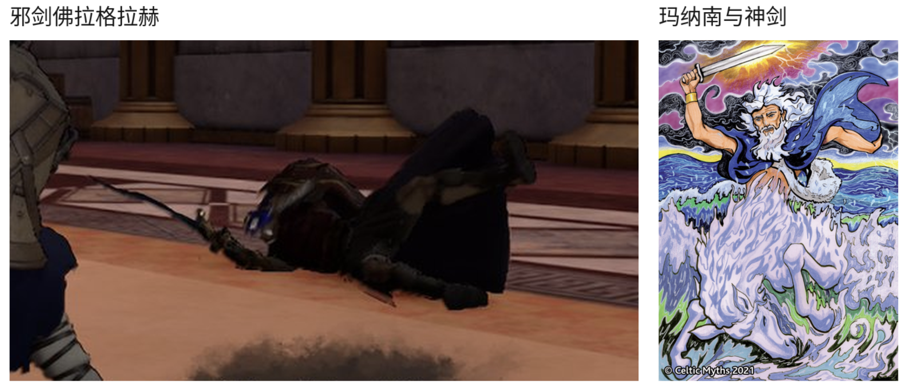
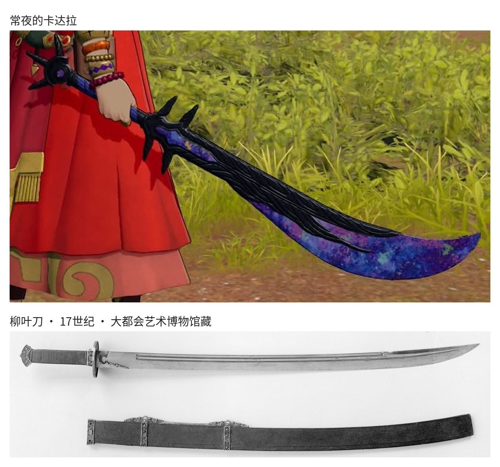

德雷克的财宝——霸罗尔遗骸（下）
马哈马杜之右臂
 赛奥朵拉失去右臂后，也失去了继承王位的资格：按照萨拉弥斯的传统，继位者必须在臣下面前使用“王权之斧”，独臂的她已经无法完成这一仪式。为此，她前往马哈马杜之祠，接上了先祖留下的右臂。后来特洛伊亚才揭示，这条手臂真正属于霸罗尔，曾由海贼德雷克带入森之部族，辗转成为马哈马杜的力量。
赛奥朵拉失去右臂后，也失去了继承王位的资格：按照萨拉弥斯的传统，继位者必须在臣下面前使用“王权之斧”，独臂的她已经无法完成这一仪式。为此，她前往马哈马杜之祠，接上了先祖留下的右臂。后来特洛伊亚才揭示，这条手臂真正属于霸罗尔，曾由海贼德雷克带入森之部族，辗转成为马哈马杜的力量。
这段经历与爱尔兰神话中**“银手”努阿达（Nuada Airgetlám）**的故事颇为相似。努阿达在第一次摩伊图拉之战中被斯伦斩断右臂，并因此失去为王的资格。医神迪安·凯赫特在工匠克雷德涅的协助下，为他装上了一只能够自如活动的银手。后来，医神之子米阿赫又使他的断手复原，努阿达最终重新登上王位。
更值得注意的是，游戏中的马哈马杜本人也曾是独臂战士。虽然他仍比部族中的所有人都强，却因古老的规矩不能成为首领；直到得到新的右臂，才统一了周边部族。赛奥朵拉继承了祖先的手臂，也重演了祖先的困境。失去手臂同时意味着失去统治资格，身体的修复又与王权紧密相连，这正是两段故事最鲜明的对应。
而《第二次摩伊图拉之战》还记载，努阿达最终死于巴罗尔之手。游戏则将这位魔神的遗骸，变成了另一位断臂统治者重新获得力量的来源。
右图为 Jim FitzPatrick 于1975年创作的《银臂努阿达》，曾用于他在爱尔兰《Sunday Independent》发表的同名连环画。
邪剑佛拉格拉赫
它与迪托利希的“安萨拉”共用了同一把神话宝剑的名字：Fragarach 的英语释名，就是 Answerer。 邪剑佛拉格拉赫，日文为「邪剣フラガラッハ」，是德雷克的财宝之一。赛奥朵拉篇第六章中，谭利穆恩原本正与剑客埃思普立商谈购买此剑，巴恩·巴恩却突然袭击，杀死埃思普立并将剑夺走。游戏将它描述为寄宿着冥界黑暗力量的魔弯刀，持有者能够使用战技“月坏”。
它的名字对应爱尔兰传说中的神剑 Fragarach，也写作 Freagarthach，通常译为“应答者”（The Answerer）。在格雷戈里夫人整理的 Gods and Fighting Men 中，鲁格骑着海神玛纳南（Manannán mac Lir）的骏马，穿戴他的甲胄，腰间还佩着这把属于玛纳南的宝剑。书中直接将剑名称作“Freagarthach，The Answerer”，并描述其力量：被它所伤的人无法生还；当它在战场上出鞘时，迎面而来的敌手也会失去抵抗的力量。
**有意思的是，迪托利希的“安萨拉”，英文名恰好就是 Answerer。**这把从芙朵拉带来的英雄遗产，据说曾由十杰之一的拉弥努使用；它与德雷克财宝中的佛拉格拉赫，在游戏中是两件来历不同的武器。从命名来看，“佛拉格拉赫”保留了神话剑名的音译，“安萨拉”则采用了英语释名的音译。于是，同一把神话宝剑的两个名字，在《万缕千丝》中分别进入了“德雷克的财宝”与“英雄的遗产”两套设定。

布拉吉的画笔
布拉吉的画笔是德雷克的财宝之一，游戏将它描述为寄宿着冥界黑暗力量的平头笔。凯伊篇第九章中，画家全泽尔借助它的力量，在欧若拉神殿的壁画《永远的乐园》中构筑了可以进入的世界，并将家人与其他人掳入其中。乌尔坦德失踪后，媞雅拉发现画中的人物比之前增加了，而欧若拉也从画中感受到了与凯伊的宝石相同的霸罗尔之力。
“布拉吉”对应北欧神话中的诗神布拉基（Bragi）。《散文埃达·欺骗古鲁菲》第二十六章称他以智慧、流畅的辞令与遣词能力闻名，尤其精通诗艺；书中还将表示诗歌、诗艺的 bragr 一词与他的名字联系起来。因此，这个名字本身就带有鲜明的诗歌与语言创作意味。
将这个神名赋予画笔，可以理解为游戏把诗歌创作的意象延伸到了绘画，再赋予它创造画中世界的力量。只不过，全泽尔所追求的“乐园”，是一个永远不会背叛自己的家庭。为了实现这种愿望，他顺从画笔的魔力与邪恶声音，将他人囚禁在自己创造的世界中。画笔让他获得了“奇迹的画家”的名声，也让他的创作最终变成了困住活人的牢笼。

常夜的卡达拉

谭利穆恩使用的常夜的卡达拉，在游戏道具说明中被直接称为“寄宿着冥界黑暗力量的柳叶刀”。它拥有战技“夺运”，使用这项战技打倒敌人后，可以提高使用者的幸运，效果持续到当前战斗地图结束。
这件武器的形制线索，是中国传统佩刀中的柳叶刀。据大都会艺术博物馆刊载的兵器研究，柳叶刀在明代已经出现，清代广泛使用，直到清末仍然流行。它的刀身从靠近刀根的位置开始柔缓弯曲，越接近刀尖，弧度越明显。
配图下方是大都会艺术博物馆收藏的一件17世纪中国柳叶刀及刀鞘，藏品编号为 14.48.2a, b。虽然馆藏页面以较宽泛的“带鞘刀剑”命名，相关研究论文明确将它归入柳叶刀，因而可以用来说明这种刀型的实际形制。
从配图对照看，游戏里的造型有着明显的夸张处理：常夜的卡达拉保留了纵向握柄和向上弯起的刀尖，却将刀身前段大幅加宽；护手与刀背覆上黑色的棘状装饰，刃面则呈现紫蓝交杂的颜色。结合道具说明，可以把它理解为在柳叶刀基础上进行的幻想化改造，用更宽阔的刀刃和阴暗的装饰，表现它所承载的冥界力量。